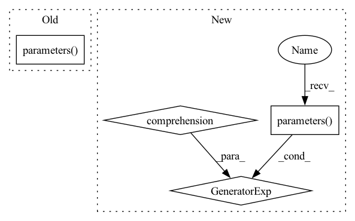

Pattern ID :20389

Before Change
betas=(0.9, 0.999),
)
online_actor_optimizer = torch.optim.Adam(
agent.actor.parameters(),
lr=actor_lr,
weight_decay=actor_l2,
betas=(0.9, 0.999),
After Change
betas=(0.9, 0.999),
)
offline_actor_optimizer = torch.optim.Adam(
chain(*(actor.parameters() for actor in agent.actors)),
lr=actor_lr,
weight_decay=actor_l2,
betas=(0.9, 0.999),
In pattern: SUPERPATTERN
Frequency: 3
Non-data size: 4
Instances
Fragment ID: 66038811
Project Name: jakegrigsby/super_sac
Commit Name: b65bb380c8e1bf1a7dfdae17b29cca8ae92efca7
Time: 2021-10-07
Author: jcg6dn@virginia.edu
File Name: uafbc/main.py
M Class Name: AnonimousClass
N Class Name: AnonimousClass
M Method Name: uafbc(54)
N Method Name: uafbc(54)
M Parent Class:
N Parent Class:
M File Name: uafbc/main.py
N File Name: uafbc/main.py
M Start Line: 98
M End Line: 265
N Start Line: 92
N End Line: 273
'>
Before Change
optimizer.zero_grad()
actor_loss.backward()
if clip:
torch.nn.utils.clip_grad_norm_(agent.actor.parameters(), clip)
optimizer.step()
logs["losses/actor_online_loss"] = actor_loss.item()
After Change
actor_loss.backward()
if clip:
torch.nn.utils.clip_grad_norm_(
chain(*(actor.parameters() for actor in agent.actors)), clip
)
optimizer.step()
'>
Fragment ID: 66038807
Project Name: jakegrigsby/super_sac
Commit Name: b65bb380c8e1bf1a7dfdae17b29cca8ae92efca7
Time: 2021-10-07
Author: jcg6dn@virginia.edu
File Name: uafbc/learning.py
M Class Name: AnonimousClass
N Class Name: AnonimousClass
M Method Name: online_actor_update(11)
N Method Name: online_actor_update(11)
M Parent Class:
N Parent Class:
M File Name: uafbc/learning.py
N File Name: uafbc/learning.py
M Start Line: 219
M End Line: 247
N Start Line: 224
N End Line: 262
'>
Before Change
optimizer.zero_grad()
loss.backward()
if clip:
torch.nn.utils.clip_grad_norm_(agent.actor.parameters(), clip)
optimizer.step()
if per:
After Change
loss.backward()
if clip:
torch.nn.utils.clip_grad_norm_(
chain(*(actor.parameters() for actor in agent.actors)), clip
)
optimizer.step()
'>
Fragment ID: 66038806
Project Name: jakegrigsby/super_sac
Commit Name: b65bb380c8e1bf1a7dfdae17b29cca8ae92efca7
Time: 2021-10-07
Author: jcg6dn@virginia.edu
File Name: uafbc/learning.py
M Class Name: AnonimousClass
N Class Name: AnonimousClass
M Method Name: offline_actor_update(11)
N Method Name: offline_actor_update(11)
M Parent Class:
N Parent Class:
M File Name: uafbc/learning.py
N File Name: uafbc/learning.py
M Start Line: 151
M End Line: 157
N Start Line: 152
N End Line: 160